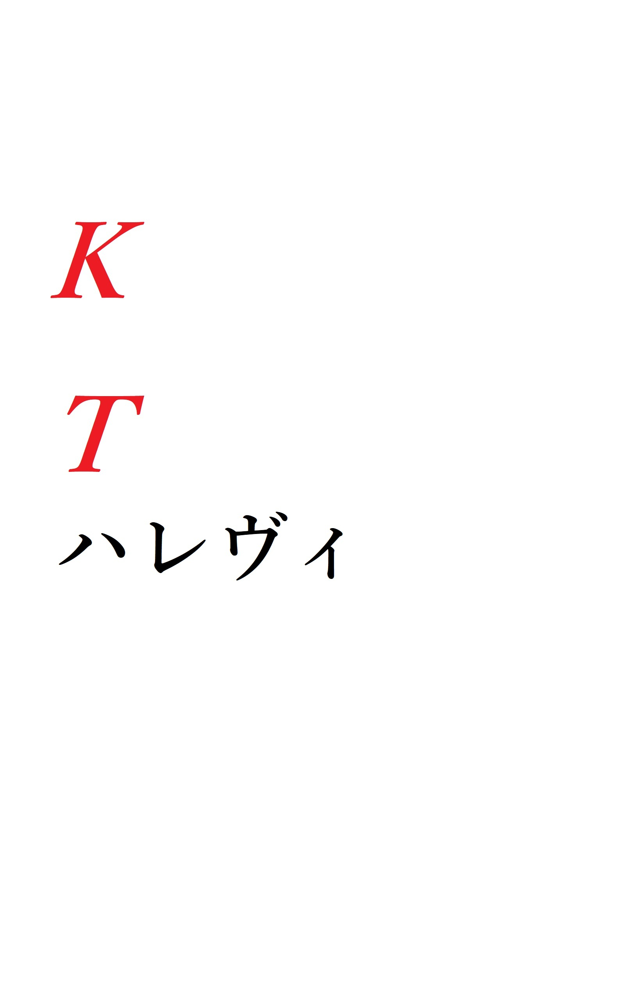

| KT ハレヴィ | |
| 白色黒蛇 | |
| (2019) | |
白色黒蛇
『アルマーク、一通りジャミングが完了しました。設置を済ませてください』
いくら立派な舞台のホールとはいえ、地下駐車場はコンクリートがむき出しになった灰色の味気ない空間だ。けれどそんな場所にはホールの来場者層に比例するかのように、そのボディーをかなり綺麗に磨かれた高級車がずらりと並んでいる。周囲には誰の姿も見えない。それもそのはず、メインホールではオペラの公演の真っ最中だ。調べが正しければ今頃ターゲットはそれに見惚れているのだろう。まぁ僕にはオペラの良さなんて何ひとつ分からないが......
どうあれ、今のところは順調。計画通りである。
僕は殺し屋だ。
言うまでもないだろうが『人を殺して飯を食う』最低最悪の人種だ。多分この世で最も穢れた仕事だろう。僕はそれを生業としている最低最悪の16
歳だ。
『配線図は大丈夫ですか？』
「覚えています」
『くれぐれも慎重に、目撃されるリスクは無くとも接触不良などを起こせばこの仕事は――』
「ハレヴィ、気が散るから少し黙っていてください」
『......終わったら一声かけるように』
「了解」
ただいまターゲットが乗っていた高級車に『細工』を仕掛けている最中だ。まさかターゲットも地下駐車場で自分が乗ってきた車に弄られているなんて、思ってもいるまい。
『ターゲットが乗る車に時限式の爆弾を仕掛け、講演終了後走行中に爆殺』と言うのが今回の殺害プラン。今回の仕事は簡単だ。目撃される危険も証拠が残ることもあるまい。
いや、正確に言えば『確実に、簡単に、隠密にやれるような作戦をハレヴィが立案した』と言うところだ。確かに『確実に、簡単に、隠密に』実行できるのは認める。しかしハレヴィの作戦はいつもそうだが、僕からすれば回りくどいと思う。
ハレヴィ、彼女は僕の仕事のパートナーだ。年齢は......僕が今１６歳だから、ちょうど僕の２倍くらい。言うまでもないがもちろん同業者、僕と同じ殺し屋だ。
ハレヴィとの仕事は『楽』だ。彼女の言うことを聞いていれば大概はどうにかなる。けれど――
「ハレヴィ、終わりました」
『予定より４０秒オーバーです』
「......細かいですね」
『当然です。仕事は完璧に、正確にこなさなければ』
「40
秒くらいゆとりをもっても良いのでは？」
『駄目です。その４０秒で仕事の成否が変わります』
はぁ、と僕はため息をついた。ハレヴィの異常とも思える完璧主義には些か頭が痛くなる。
「じゃあ４０秒早くそちらに戻ればいいですか？」
『それが好ましいですが走るのはＮＧです。走る姿をジャミングしていない監視カメラに捉えられては後々面倒ですから』
あぁ、そうかよ。
「はいはい」
『返事は一回』
「......はい」
僕は通信を切ると舌打ちをした。
――ハレヴィとの仕事は、正直やりにくい。不愉快だ。
僕が地下駐車場で『細工』を施していた間、ハレヴィはホールのカフェテリアから施設のセキュリティにハッキングを仕掛け、監視カメラをジャミングしていたのだ。
ターゲットの車に『細工』を済ませた僕は、そのカフェにいたハレヴィと合流してその場を離れた。『細工』を仕掛けた以上はその場に留まる必要はない、むしろ留まることは危険とも言える。
このホールの周りは広い市立公園、ホールでオペラを聞いている連中とは違い、おおよそ『庶民的』という表現が的確そうな家族連れやカップルが笑いながら遊ぶなり散歩をしていた。幸せそうな家族、幸せそうな男女、それらを一瞥すると僕は舌打ちして目を背けた。
「そこならちょうど飛行機雲が見えるかもしれません。少し休憩しましょう」
ハレヴィはベンチを指さしてそう言った。ハレヴィの言葉は隠語だ。『爆発予測位置が見えるでしょう』ってことか。
「そうですね」
僕が返事をするとハレヴィが指さしたベンチに２人並んで座った。
ハレヴィが新聞を広げ、僕は......適当に空を見ていた。
空が好きな訳じゃない。というより、そもそも好きなものなんかない。けれど『ただベンチに座って人形のようにしているとかえって不自然です』とのハレヴィの指摘を受け、仕方ないからぼーっと空を見ていた。
青く、広く、何もない空。雲が点々と浮かぶけど、だからといってなんだと言うんだか......見ていても楽しいものでもないけど見ていなければ不自然。あぁ、面倒だな。
ベンチでの『休憩』を始めて２０分くらい経つと"ドン"と少し大きな音の後、見覚えのある黒い高級車が破裂したように砕け、そこからオレンジ色の炎と灰色の煙が出てきた。良かった。成功したようだ。このまま黙って帰れば――
「な、何！？」
爆発の直後、ハレヴィはベンチから勢いよく立ち上がり動揺した、フリをした。その後震えながら大きな音のした方向を凝視して怖がる、演技をした。
うわぁ、わざとらしい。薄っぺらい演技だ。下手くそだ。
しかしそんなハレヴィの下手な演技なんか目もくれず、周りにいた有象無象は
「なんだなんだ？」「やばくね？ あれ」「見に行く？」「やめたほうがいいって」
「ちょっと見て来るわ！」なんて、十人十色の戸惑い方をする。そしてそれに混じってハレヴィは煙の出ている方向へと向かった。死体確認のために。
......無駄なことだ。
ハレヴィみたいに無駄な芝居を打ちたくない僕はどうしようかほんの少し考える。とはいえ下手に動くのは良くないから、結局再びぼーっと空を眺めることにした。

分かっていたけどターゲットは無事死亡した。
軽トラ１台木端微塵になる爆弾を乗用車に仕掛けたのだ。車は原形を留めていないだろうし、そんな有様でターゲットが生きているなんてことはあり得ない。むしろターゲットの遺体が砂微塵になって、逆に本人だと確認出来ないような有様になっていることの方を僕は心配する。
「私は今日の報告をしてきます。アルマーク、あなたは少しだけここで待機を」
どこにでもあるような、殺風景な事務所の待合室、一応は『森林環境保全協会東部支社』と銘打っているこの事務所で、僕たち殺し屋はいつもこの事務所で仕事を請け負ったり、終わった仕事の報告なんかをしている。
「......また説教会ですか？」
「反省会です」
「ほとんど同じじゃないですか」
「その名称はどうあれ、私たちには必要なことです」
そう言ってハレヴィは報告に向かった。
「......なんだよ、くそ」
そういって待合室のソファーに腰かける。
無駄な行動、無駄な配慮。無駄無駄無駄、ハレヴィは無駄ばっかりだ。
今回の仕事だってそうだ。ターゲットが車で移動するのは分かっていたのなら、どっかのビルの屋上からRPGで攻撃すれば一発だった。
僕は当然、ハレヴィだって重火器、ロケットランチャーの扱いは十分心得ているはずだ。それなのにわざわざ施設の監視カメラをハッキングして、わざわざターゲットが観劇するホールの地下駐車場に侵入し、配線を弄り爆発物を取り付けるなんて回りくどすぎる。
仕事は確実に、簡単に、隠密に、もちろんハレヴィが言っていることは理解できるけど、やっぱりどうも相性が悪い。
「お待たせしました」
終わった仕事の報告なんて長くて３分程度しかかからない。『仕留めました』の一言でほとんど済むからだ。故にハレヴィはすぐに戻ってきた。
「今日は概ねプラン通りでしたね。及第点です」
「それは、どうも」
及第点、ずいぶん上から目線な物言いだ。僕より年上で、経験があって、何より勉強が出来て頭が良いからって――
「しかし爆発物の設置に時間がかかりましたね。今後のために機械工学をかじっておくといいでしょう。今度私が所有している蔵書をお貸しします」
「結構です」
「いえ、今後もっと複雑な機械作業が必要になる仕事があるかもしれません。学んでおいた方があなたのためです」
あなたのため？ 何様のつもりだ。
「それよりもっと直接的な手段を選んでもいいのでは？」
「直接的な手段？」
「近接戦闘、狙撃、徒手空拳での暗殺。どれも卓越している自信があります」
「却下、何度も言っていますがリスクが高すぎます」
この言い合いは何度目か、話が通じないと分かってはいるがいい加減僕を信じてくれても良いだろうに......
「普段から鍛錬は積み重ねています。失敗はあり得ません」
「殺し損ねることはなくともその後の処理です。警察に目を付けられたら仕事に支障が出ることは必至です」
「それを言ったら、今日のやり方なんて目を付けられるどころじゃないでしょう？ 街中で爆発物なんて、警察だって黙っていない。ニュースでも新聞でも話題になってますよ」
「問題ありません。そこは完璧に手を打ってあります。あなたが何か痕跡を残していない限りは、私たちの仕業とバレることはないでしょう。しばらくすればメディアだって大人しくなります」
ハレヴィが顔色一つ変えずそう言い放つ。『あなたが何か痕跡を残していない限り』か。信用が無いのかそれとも僕を甘く見ているのか、どちらにぜよ今すぐぶん殴ってやりたくなる。しかし――
「......ちっ」
僕は舌打ちで済ませ、怒りを抑えた。
「良く抑えましたね」
「......うるさい、です」
感情のコントロール。特に怒りの感情の抑制。ハレヴィが僕に課した『課題』のつもりらしい。だからこそハレヴィはあえて、意図的に僕の感情を逆なでるような言葉を口にしやがる。ハレヴィの意図通り、出された課題を淡々とこなしているようでなんだか癪ではあるが、とはいえ向こうの狙いが分かっている以上、それに対していちいち怒るのもなんだか――
「......今日はもう上がって大丈夫です。次の仕事が入ったらまた連絡をします。それとこちらを」
そう言うとハレヴィは真っ白な紙箱を僕に差し出した。その紙箱の中身は良く分かっている。
「......どうも」
それは持病の薬だ。僕は生まれつき......かどうかはさておき、少なくとも物心ついてからは心臓を患っている。この薬はある意味僕の『生命維持装置』と言ってもいい。その服用をサボればどこかのタイミングで前触れなく発作を起こし、運よく介抱してもらったとして数日間は安静にしなければならなくなる。ちなみにもしも介抱してもらえなかったら、僕は死んでいたらしい。自己管理が出来なかった１４歳まではよく発作を起こしたものだが、最近は指示された通りに毎日服用しているため発作自体は起きていない。
ただ一つ、ここ最近ハレヴィがその持病役を僕に渡す役目になっているらしい。
迷惑な話だ。
「薬剤師が言うところによると、これで症状を抑えているとはいえ発作を１００％
抑えられる訳ではないそうですから、身体に不調があったらすぐ私に知らせるようにしてください」
ハレヴィからその言葉を聞かされるのは何度目か。この体を16
間取り扱っているんだ。この薬だってまた然り、いちいち説明されずとも十分思い知っている。
いい加減くどい。そんな意思を込めて僕はいい加減な返事をする。
「はいはい」
「返事は一回」
「......はい」
あぁ、不愉快だ。
３日後
「今回のプランを説明します」
いつもの事務所、そこの奥にあるさほど広くはない会議スペースに僕とハレヴィはいた。窓のない密閉感のある会議スペースはいつ来ても異様な雰囲気だ。何も怪しいものはないというのに、何かが起きそうな予感さえ感じさせる。
「今回のターゲットは中国系マフィアの『チェン・オウ』という中国人です。先週まで九州の毛利組系の暴力団組織に在籍していたようですが、いわば中国系マフィアのスパイということが組上層部に露見してから逃走、現在この街に拠点を置く中国系マフィアの元に身を寄せているそうです」
「依頼主は、その九州の極道組織ですか？」
「そのようです。そして今回のプランですが、毒殺を考えています」
毒殺か。これはまた随分と面倒そうなプラン、回りくどい仕事になるだろうな。
「まずはチェン本人に接触する機会を作らねばなりません。それでここ数日、中国系マフィアに潜伏中の同士から彼の簡単なプロフィールを送っていただきました」
九州のヤクザの元でスパイをしていた奴を殺すために、そいつが属するマフィアにいるスパイを使う。化かし合い、酷い茶番だ。
「そのプロフィールの中で一番使えそうな情報として、彼は武器取引をシノギとしていたらしく、そしてどうやら日本のラーメンが好物だそうです」
「ラーメン？」
「はい。なので今回のプランですが......」
①
アルマークはチェンの属する中国系マフィアの本部近くのラーメン屋でバイトを始める。
②
武器商人を装ってハレヴィがチェンと接触を試みる。そのために手土産として自動小銃２０丁等々、銃火器を格安で納入する。
③
何度目かの会食の後チェンをアルマークが働くラーメン屋に連れて行き、そこでアルマークがチェンの食べるラーメンに毒物を混入する。
「こんなところです」
こんなところ......それってつまり
「僕がラーメン屋でバイト？」
「ある程度ラーメン屋のお客の何人かに顔を見られていた方が警戒されにくくなります。『背が低い出稼ぎ労働者の若者』と彼らに認知されるよう努めてください。そんな子が、まさか毒物で暗殺を企てるだなんてターゲットも客も店主も想像しないでしょう」
「回りくどすぎませんか？」
「しかしこれなら確実に殺せます」
「それに時間がかかり過ぎるのでは？」
「そこは私がなんとかしてみせます。信用してください」
信用してくださいだって？ 勝手過ぎるだろ。僕の実力は信用しない癖に......
そんな訳で僕はラーメン屋で働くことになった。
「坊主！ ３番テーブルだ！」
「はい！」
韓国から来日した留学生（苦学生）として僕はこのラーメン屋『風柳軒』でバイトを始めた。聞くところによるとどうやらハレヴィの手回しもあったらしい。
「坊主！ 洗い場溜まってんぞ！」
「す、すいません！」
くそ、なんで僕がこんな......
これが、ラーメン屋のバイトが僕ら殺し屋のすることか？ どう考えても無意味な時間だとしか思えない。
しかしこれも『仕事』なのだ。つまらなそうな顔をするわけにはいかない。
『次そんな仏頂面しやがったらつまみだすぞ』
とこの店主に釘を刺されている。仕方ない。僕はとりあえず真面目にコツコツと仕事に取り組んだ。取り組まざるを得なかった......
『風柳軒』はこの地域じゃ長くやっている老舗の部類らしい。看板メニューは『醤油ラーメン』だ。繁盛店ではあるがその厨房は油まみれで汚いことこの上なく、全席カウンター席でところどころ汚れが目立つ有様。店に貼ってある演歌歌手のポスターも四方の隅が黄ばんでいるほどボロく、高校野球を流し続けているテレビも随分古いタイプのものである。それでもラーメンの味は評判が良いらしく、お昼時は客足が絶えない。
お昼時を過ぎて午後２時ごろ
「重ちゃん、あの子最近雇ったの？」
カウンターに座っている少し太った女性客が店主に声をかけた。どうやら店主とは知り合いらしい。
「あの子ォ？ 坊主のこと？ そーよ。韓国から来た苦学生ってんで面倒見ろって言われてな。坊主がどうかしたかい」
店主は荒っぽく答える。お客相手にも遠慮がない物言いだ。
「前の子と違って随分真面目そうな子じゃない」
「あいつは問題外だ。確かにそれに比べりゃ坊主はマシだがまだまだよ。まずは無愛想なのから治ってもらわにゃ」
「無愛想だなんてそんな、重ちゃんすーぐ悪い様に捉えるんだから」
「余計なお世話だよ」
同意だ。お前らが僕をどう見ようが関係ないだろ。どうせ今回の仕事が終わったらこんなの秒で辞めるんだから。
「あんまり厳しいとまた逃げてっちゃうかもよ？」
女性客はそう言うとタバコとライターを取り出した。
「店内は禁煙だぜ」
「昼過ぎであたししかいないじゃない」
「坊主がいるんだ。未成年の前でそういうのは良かねぇ」
「ふふ、実は可愛いんだから」
「うっせぇ」
会話を聞き流しながら、僕は黙って食器を洗い続けた。
『そちらの様子はどうですか？』
「どうも何もないです」
ハレヴィとの中間報告、相手はもちろんハレヴィだ。
『なら良いです。今後も怪しまれることの無いように』
ラーメン屋で働いているだけで特に裏工作をしながら、ってわけじゃないんだ。怪しまれることなんかあるわけがない。ハレヴィは相変わらず神経質過ぎる。
「そっちはどうなんです？ 僕はいつまであんなとこにいなきゃいけないんですか？」
『明日にはチェンと直接交渉の予定です』
返事にはなってないが、まだかかるって事らしい。しかしハレヴィからすれば
「順調、ですか」
きっとそういうことなんだろう。
『はい。手慣れてますから』
手慣れた仕事をしているハレヴィと慣れない仕事をさせられている僕。
コンビとしてはとてもアンフェアだ。そうは思わないのだろうか？
「ハレヴィ、計画の一部変更を提案します。明日の直接交渉の時、僕が武装して襲撃します。建物から出た時にチェンを仕留めれば――」
『駄目です』
「何故？ あなたが交渉事に手慣れているように、僕だって狙撃や戦闘術に長けている自信があります。あなたが僕に『信じて欲しい』と言うのなら、あなただって僕を信じてください」
『あなたの実力を疑っている訳ではありません。ただ"今後の仕事"にも不都合が生じないようにしなければいけませんから』
「今後もこんな回りくどいやり方で行くと？」
『どう捉えるかは勝手ですが、私たちのやり方を変えるつもりはありません』
私たちのやり方？ なんだよ。『私たち』って。複数形で僕を巻き込むなよ。あくまで全部『ハレヴィのやり方』だろうが。
『この話はここで終わりです。ではまた次回の進捗報告の時に』
僕はやっぱり不愉快だった。
今日もバイトだ。
性に合わないやり方だが、今更ハレヴィが立てたプランを勝手に崩すわけにも行かない。ターゲットを殺し損ねることは僕ら殺し屋にとっては最もあってはならないことだ。『殺せなければ自分が死ぬ』と言っても過言じゃない。
だから不愉快でもなんでも僕はここに通い、働かなければならない。
ハレヴィがターゲットを連れてくるその日まで――
「坊主、客が落ち着いたら休憩行っとけ」
「はい」
昼時が過ぎて客足が少なくなった。お昼時は外に列が出来るほどの繁盛ぶりで忙しい、しんどいと言われる時間帯だったが僕は何とも思わなかった。それもそのはず、ここでのバイトは僕が今まで積み重ねてきたトレーニングと比べれば極めて楽なもんだ。
今まで僕は殺しの技術を磨くため色んなトレーニングを積み重ねてきた。それはどれも簡単なものではなく、時には自身の命さえ危ういと思うこともあった。
それと比べれば随分と楽、もっと言えば退屈とも思える。繰り返しのルーティンワーク、やっぱりどうしてつまらない。
「坊主、腹減ったろ？」
そう思っている僕に店主がそう声をかけてきた。
「え？」
腹減った、空腹......か。
「べ、別に。大丈夫です」
これくらいならまだ平気だ。『１日食パン１枚で雪山登山をする』なんて常人からすれば無茶苦茶なトレーニングを１０回は乗り越えた僕からすれば、これくらいなんとも......
「うっせぇ、良いから食っとけ」
店主は炒飯の盛られた皿とコップ1杯の水をカウンター席に置いた。
僕の返事はどうでもいいのか。大丈夫だと言ったはずだが――
「食わねぇと夜持たねぇぞ。食える時に食っとけ」
食う必要は無い。そんなの無くても平気だ。
しかし、ここで店主の炒飯を拒絶したらそれはそれで店主の機嫌を損なうか？
最悪『出ていけ』と言われるか？ いやいやそんなことは決して無いだろうが、しかし......
「......いただきます」
まぁ、考えてみれば食べた方が良いのか。
ここでは僕はあくまで『韓国から来日した出稼ぎの労働者』だ。
その立場の人間ならここで差し出された炒飯を拒むことはない、のだろうな。
僕は黙って炒飯を口にした。味は、気にしない。
『明日、会食の約束をしました。いよいよ決行となります。よろしいですね？』
僕が『風柳軒』でバイトを始めて３週間、その間ハレヴィはどうやらいつも通り手慣れた仕事を、順調に上手くやっていたらしい。
「了解しました。」
『くれぐれも、お渡ししたアコチニンを明日は忘れないように』
なんだ？ まさか僕が忘れ物をするとでも？ まるで子供扱いじゃないか。
「そんなことあり得ません」
僕はそう言い切った。
『では明日、よろしくお願いします』
「......はい」
決行前最後の中間報告は手短に終わった。しかしこの後の流れは３週間前に既に決まっているから話すことなどない。
しかしここまでで３週間。ハレヴィは何とかしてターゲットに近づこうと暗躍していたのかもしれないが、僕と言えば慣れない飲食店での仕事をしていただけだ。
回りくどい。たった一人を殺すために３週間もかけている。僕だったらターゲットの居場所を突き止め次第、宅配便になりすまして襲撃する。きっと１週間もかからない。
「......クソっ」
僕はやっぱり不愉快だった。
結論から言えば、毒殺は成功した。その後は手はず通り、僕はラーメン屋を辞めて、ハレヴィは３日かけて後始末を終わらせた。
良くも悪くもいつも通り、今回も終始僕は不愉快だったことを除けば完璧に終えることが出来た。
「お疲れ様です。アルマーク」
「はいはい」
「返事は一回」
「......はい」
「よろしい、次の仕事ですが......」
どうせ僕を雑用に使ってまた回りくどいやり方になるのか？ はいはい分かっていますよ。
「貴方は狙撃手として私のバックアップに回っていただきます。ライフルの手入れを怠らないように」
なるほど、この言い方はあれだ。僕はターゲットを狙撃出来る位置に待機してライフルをターゲットに向けて構えはするものの、メインはハレヴィのハニートラップ。僕はそれが失敗した際の所謂『保険』に過ぎない。まるで添え物のような仕事になるという感じか。
直接的な暗殺の腕前を認めて貰えたと喜んでいいものでは決してない。
「次のターゲットは随分と好色家だと聞いています。なんとかして向こうをその気にさせたところで仕留める。今回のプランはいつも以上にシンプルですが、気を緩めないでください」
ほら、思った通り。気を緩めるなだって？ 添え物扱いされても腐らず気を引き締めろと言うのか。全くふざけるなよ。
「......分かりました」
しかし反抗してもしょうがない。僕は渋々了承した。
確か次の仕事は、某名家の次男だったか。裏社会で暗躍するある麻薬組織と警察の癒着のパイプ役を担っているとかなんとか。依頼したのは警察側か麻薬組織側かは知らないが、おおよそ口封じが目的だと見受けられる......と言っても僕たちからすればそんな事情はどうだっていい。
またつまらない、不愉快な仕事になりそうだ。僕にとってはこれだけだった。
煌びやかで、豪勢で、低俗で汚らわしい輝きを放つラブホテル。それが見えるボロい雑居ビル。かかっていた鍵はピッキングでこじ開けて僕はその屋上へと辿り着いた。今日の天候だが、午前中は晴れ。午後から前線の影響で大雨になるらしいが、仕事はそこまでかかるまい。今のところ狙撃するにはもってこいなロケーションである。僕は旅行鞄に隠していたスナイパーライフルを手際よく組み立てて、ハレヴィに通信を入れる。
「こちらアルマーク、配置に着いた」
けれど返信は来ない。しかしそれもそのはずだ。今頃ハレヴィはターゲットを誘惑してホテルに連れ込むために色仕掛けの真っ最中。まったく、あんな口うるさくて神経質な女のどこが良いのかさっぱり分からないが、それでも政治家とか、マフィアの大物とか、企業のお偉いさんとか、名のある金持ち一家のお坊ちゃんとかはどうやらああいう女が好きらしい。ため息をつきたくなるほどの愚劣さだ。そんな風だから、お前らは僕ら殺し屋に呆気なく殺されるんだよ。
指定されたラブホテルから直線距離でおおよそ７０メートルほど先に、ハレヴィと少し小太りした男の姿が見えた。見たところあの男の顔は......事前に写真で確認していたターゲットのものと一致する。間違いなくターゲットその人だ。
なるほど、どうやらハレヴィは今のところ上手くいっているらしい。このままいけばきっと僕は何もせずこの仕事は終わるのだろう。あぁくだらない。つまらない。
立ち止まることなくそのまま２人はホテルに入る。ホテルの中のやり取りとか詳しいことは分からないが、この後の展開はきっとあのターゲットを仕留めたハレヴィが僕に『無事に殺せた』という旨の通信を入れてくるだろう。それまできっと10
分もかからないはずだ。僕はライフルの安全装置を外し、ホテルの入り口に銃口を向けておき、スコープを覗く。こんなことはきっと意味が無いのだろうが、これも『念のため』という奴だ。多分、ハレヴィはしくじらないとは思うけど、それでもハレヴィがしくじった時のため......全く、本当に添え物らしい仕事だ。それそのものだ。全くもって惨めになる。嫌になる。絶対に口には出せないが、なんならハレヴィがしくじってくれた方が僕としては面白いのに、とも思う。
『こちらハレヴィ、仕事は無事完了しました。急ぎ撤収してください』
ほらな。想像していた通りだ。
「了解」
今回もつまらない仕事になった。やっぱり不愉快だ。
「アルマーク、緊急の仕事です」
某名家の次男の暗殺完了後、成功の旨を携帯で連絡し終わったハレヴィが僕にそう告げた。
緊急の仕事、僕ら殺し屋にとって緊急とされる案件はそう多くない。殺す希望期日があまりに早すぎるものは大方、依頼を受ける段階で期間を延ばすか案件そのものを断るからだ。しかし、それでもごく稀に緊急とされる案件がくることがある。
それは大方『逃亡した殺し屋』の暗殺依頼。即ち僕らの雇い主直々の案件だ。
ハレヴィが僕の携帯に送ったのはターゲットのプロフィール。今回のターゲットはこの痩せたスキンヘッドの男か。いかにも殺し屋らしい顔つきだ。
「ターゲットはこの男『大槻ユキオ』主に海外系マフィアの暗殺に携わっていた男です。どうやら数時間前に警察から指名手配を受けたらしく、それで脱退する旨を連絡してきたようです」
なるほど......しかしまぁ、そんなことを僕らの上層部が受け入れる訳はない。
当然だ。指名手配を受けたということは痕跡の抹消に失敗したということ、もしくは監視カメラや目撃者に見られたということ、どちらにせよ『ヘマをした』のには変わりない。
ヘマの度合いによっては数か月程度ほとぼりが冷めるまで謹慎ということもあるが、指名手配を受けたとなればもう殺すしかない。もし、仮に、この大槻ユキオが警察に捕まれば......その先はもう口にするのもおぞましい。僕らの生き死ににも関わる重大なことになるだろう。
「空港はもちろん、密出国用の港やコンビナートにも今のところターゲットの目撃情報はありません。国内にはいるはずです」
こういう時、僕もハレヴィも『探す』という考え方はしない。その逆『逃げ道を用意して待ち受ける』が正解だ。魚釣りの様に、餌を垂らして獲物が食らいつくのを待つ、と言うと分かりやすいか。
「僕の方から『窓口』の方に偽情報を撒くよう声をかけてみます」
「お願いします。こちらも網を張りますので、見つけたら連絡を」
「はい」
ターゲットが今求めている、今回最も有効な餌と成り得るのは『早急な密出国の手段』だろう。だからそれを匂わせる情報を拡散する......それにターゲットが食いついたらあとは単純、無事逃げられると安堵したところを素早く仕留めるのだ。
それから３０分後、僕が撒かせた密出国の情報にターゲットが引っかかったらしい。言われた通り僕はハレヴィにこの旨を報告する。
「ターゲットが網にかかったようです」
「港への到着時刻は？」
「『２時間後に到着を予定している』と言っているそうです」
手元の携帯にターゲットが来る港の地図を表示させる。同じ画像を連絡用のアプリでハレヴィにも共有した。
ターゲットが来るだろう場所は大きな貨物コンテナの山に囲まれたコンビナート。こういう場所なら......
「狙撃が良いと思います」
潜む障害物が多い上、建物とは違って上り下りには多少面倒があるがその分向こうも狙撃は無いと油断をする。狙撃がここはきっと最適解のはずだ。しかし
「いえ、ここは近接での暗殺が最適解です」
しかしまたハレヴィは当然の様に僕の考えを否定する。
「向こうは殺し屋ですよ？ 近接での暗殺より長距離狙撃の方が確実です」
「この一帯には石油や一部爆発物が集積されています。銃火器の使用はリスクがあるので不適格です」
「僕だったら外しません。確実にターゲットの頭部を打ち抜きます」
「打ち抜いた弾が貫通してコンテナに着弾した場合を考えていますか？ 最悪それだけでコンテナは爆発し、ターゲットの暗殺どころではなくなるかもしれないんですよ？」
「そんなことが起こりません、貫通しないよう弾は選びますよ。それならリスクは小さく抑えられます」
「そういう小さなリスクを無視することが失敗に繋がるのです。あなたもこのターゲットみたいになりたいんですか？」
ハレヴィとの口論はいつもこんな風に終わる。反論しても反論してもこうだ。まだまだ言いたいことはあるけれど、これ以上反論したって根本的なハレヴィとの考え方の違いが浮き彫りになるだけ、お互いの思想の違いはもう十分良く分かっている。決して一致することはない。
「......分かりましたよ」
一致することは無い上に、コンビの代表でやっぱり立場的優位はハレヴィだ。なんどやっても、なんど言い合っても、そもそも言い争うこと自体が時間の無駄という結論に行き付くんだ。
「それでは、急ぎます」
「......了解」
ハレヴィが運転する白い乗用車で目標のコンビナートまで移動する。
天候は予報通り、空はまるで汚水のような灰色に染まり、そこから汚い雨が車の窓ガラスに容赦なく、機関銃のように降り注いでいる。まるで不愉快な僕の心中を鏡写しにしているみたいだ。ぼーっと空を見ていると一筋の青白い閃光が見えた。直後、ドン、と大きく耳障りな雷鳴が響いた。
「酷い天候です。このような悪天候では狙撃は出来ません」
だから私が正しいですってか。なんだよ嫌味かよ。条件反射で言い返す。
「僕なら、出来ますけど」
それにそんなの、ハレヴィが出来ないと思い込んでいるだけだ。確かにこの悪天候での狙撃は晴天の時と比べると確かに難しいものになるかもしれない。しかしそれでも決して『出来ない』ことはないはずだ。
「......アルマーク、私たち殺し屋は極力『１００％
可能だ』と言える手段のみを選らばなければなりません。何故か分かりますか？」
そんな、分かり切ったことを聞くなよ。
「殺し損ねることは僕らの命も、依頼人の命も危うくするからです」
「その通りです。次に、私たち殺し屋は極力現場に痕跡を残してはなりません。何故か分かりますか？」
こっちも、今さら聞くことでもないだろうに。
「警察だけでなくターゲットの周辺人物に、僕らの犯行だと探られないため」
「その通りです」
分かっているよ。分かっているとも......
目の前の信号が赤に変わる。僕らを乗せた車はゆっくりと減速して、止まった。
「確かにあなたの戦闘術、銃火器の扱いは一流なのでしょう。日々鍛錬していることも、知っております」
「だったら少しくらい信用してくれてもいいのでは？」
「あなたのことは信用していますとも、ただ『直接戦闘』という手段は不確実な要素が多い。その為出来る限り避けているのです」
不確実な要素が多い、ね。
「毒物や複雑な機械設計、ハニートラップの方が不確実な要素が多いと思いますけど？」
「その方が確実です。今は分からずとも、いずれそうだと理解するでしょう」
いつも通りの上から目線だ。教師かなんかのつもりか？
「例えそうだと分かったところで、男である僕じゃハニートラップなんて手段は選べませんけどね」
「そうとも言い切れません。ターゲットは多種多様、相手が男性とも限りません。女性だった場合は......いえ、これはもう少し経ってからにしましょう。色々難しい問題ですから」
ハレヴィは茶を濁した。まぁおおよそ『アルマークみたいな子供にはまだ早い』とでも言うんだろう。まぁ遅かれ早かれどうであれ、僕の性に合わないから万が一教わったとしても実行することはないだろう。
「そんなのに引っかかるのは、間抜けなクズだけですよ」
ハレヴィがハニートラップを仕掛けるのは皆『クズ』と言えるような汚い大人ばっかりだ。政治家、大企業の陰の重役、マフィアの幹部、名家の次男坊。外面は良い奴、清廉潔白を装っておきながら、裏ではゲラゲラ笑いながら人を踏みにじって甘い汁を啜っていやがる。何度か見たことがあるそいつらの面を、笑い顔を思い出すだけで吐き気がする。あぁ気持ち悪い。憎たらしい。そして何より腹が立つ。不愉快だ。
「ああいう連中を憎むのは勝手ですが、ただただ『クズ』と言い切ってしまうのは考え物です」
「クズはクズでしょう？ 何が違うんです？ 結局同じです」
「だとしても、そのクズを理解する必要が私たちにはあります。そういう連中を憎んだうえで、その習性、思想、思考、そういったものを認識することは、これからの仕事に大いに役立つでしょう」
クズどもを憎んだうえで、理解する......か。なるほど、それは確かに一理あるかもしれない。まぁ面倒だからその内考えよう。
「それに、これから私たちが仕留めに行くのはクズの中でも特別際立ったクズですから」
「それは皮肉ですか？ 今回のターゲットがクズなら、僕らもそれに匹敵するクズですけど？」
僕がそう言うと珍しくハレヴィが
「フフッ」
と笑った。
「あんた何笑ってんだよ？」
「失礼、けどあなたも冗談を言うんですね。少し意外です」
「......冗談じゃない」
「あなたの言葉にしては、とても面白かったですよ」
信号が青に変わる。ハレヴィがアクセルを踏み、再び車は走り出した。
面白い？ 何がだよ......やっぱり不愉快だったけど、こんな場所でこれ以上怒り散らしてもつまらない。
「そうかよ」
適当に返事をしておいた。
目的地のコンビナートから１キロ離れた駐車場に車を停め、そこから歩いてポイントへと向かう。ターゲットが来るまでおおよそ１時間２０分程度。コンビナート最寄りの駐車場を使わないのは、ターゲットがコンビナートに来た際、こちらが罠を張っていると悟られないためだ。殺し屋同士、車のナンバーは当然、どんな車種の車を使っているかも教えることは決してないが、同じ雇い主の元で働いていた殺し屋同士、一度でも車に乗るところを目撃されていたならば、おおよそそれらを覚えられているだろう。当然警戒もされるはずだ。
駐車場に車を停めたらそこでコンビナートに向かう準備をする。
「傘はありますか？」
「いりません」
そう言って僕は白い雨合羽を着こんで車の外へ出た。
「傘はいざという時に戦闘行動の邪魔になりますから」
それに今回は近接、ナイフでの暗殺になる。ならば手荷物は少しでも少ない方が良い。人間が最もその身体能力を生かせるのは『全裸』であると教わった。衣服や装飾は少なからずその行動に制約をかける。例えばリストバンドや腕時計をつけてのナイフ格闘術と、手首に何もつけていないナイフ格闘術では手首のグリップに差が出る。手首に何か巻いているだけ動きの制約がかかることになるのだ。
そのように、純粋に格闘術で仕留めるなら本来上半身は何も身に着けないのが正解である。しかし当然、上半身裸でターゲットに迫れば間違いなく怪しまれるのは言うまでもない。それ故、近接での暗殺を仕掛ける際は出来るだけ軽装、薄着、そして刃物等の武器以外手荷物は何も持たないのが良い。
「雨合羽だけで外を歩いていると怪しまれます」
「そんなことは無いと思いますが」
「雨合羽だけで外に出ようと思える雨量ではありません」
そう僕に指摘するハレヴィは立派な黒傘と小さなハンドバッグを持っていた。多分あのハンドバッグの中にサバイバルナイフがあるんだろう。バレバレだ。きっとそれはハレヴィからすれば普通なのかもしれないが、僕からすれば『舐めている』としか思えない。
「ハレヴィこそ、もう少し軽装で行くべきかと思います」
「十分軽装です」
「ハンドバッグは本当に必要ですか？」
「スーツ姿の女性が手ぶらで歩いていては、それこそ妙に思われますから」
くそ、やっぱこの手の問答はめんどくさい。そう分かっていても繰り返してしまうのも、やはり考え物だ。
「どうなっても知りませんよ」
僕はそう言ってコンビナートに向けて歩き出す。
「アルマーク」
２歩進んだところで呼び止められた。今度は何の説教だ？
「せめてポイントまでは、私の傘に入ってください」
「......分かりました」
５００メートルほど歩いたところで更に雨が強くなった。灰色の空は少しその色を濃く変貌させ、雨粒はボツボツと自らを地面に打ち付け、弾ける。
雨音も絶えない。僕らは黙ってコンビナートに向けて足を進める。
僕より背丈の高いハレヴィの歩幅と合わせて歩くには少しだけ急ぎ足にならざるを得ない。具体的に言うとハレヴィが２歩進む頃には僕は３歩進まなければならないのだ。
「歩くスピードを落としましょうか？」
急ぎ足になる僕を見てハレヴィがそう尋ねた。確かにそうすれば少しだけ歩きやすくはなるだろうが......
「いえ、結構です」
そんな程度のことで時間を取られる訳には行かないだろ？
僕は歩く速度を少し早めた。当然、ハレヴィが差している傘の外側へ出る。
「アルマーク、そう慌てなくても大丈夫です」
「急がないとターゲットが......」
「まだ時間には余裕があります。それにこの雨、転んで怪我をすれば、それだけ動きを鈍らせることになりますよ」
「子供じゃないんですから」
だからハレヴィにそう気遣われるのもどこか嫌なんだ。僕らはコンビであって主従関係ではないはずなんだから。
「いえ、あなたはまだまだ子供です」
しかしハレヴィはそう言い切る。薄々分かってはいたけど......そうか。そういうことか。やっぱりそう見ていたんだな。こうなったら、そんな風に思っていやがったって言うのなら、耳障りな雨音の中でも聞こえるくらい、ハッキリとした声で言い聞かせてやる。
「いくら年下で、未成年とはいえ子供扱いは癪に障ります。不愉快です。それに実力だってハッキリ言ってあなたに劣ってはいません。子供呼ばわりは金輪際やめてください」
この際だから思うところを素直に言い聞かせる。どうだ？ 何も――
「いえ、あなたは子供です」
けれどハレヴィは自分の主張を変えなかった。
なんなんだ？ なんなんだよ？
「......いい加減にしてくださいよ。僕はお前の持ち物じゃない！」
今までずっと思ってきたことだ。ハレヴィと組んでからの僕はまるでハレヴィの言いなり人形。アンフェアを通り越して完全に奴隷と主人の関係に近いものになりつつある。何がコンビだ。こんなのただの奴隷じゃないか⁉
「僕だって一人前だ！ いい加減、自分の都合だけを一方的に押し通すようなことはやめてくれよ！」
「何か勘違いをしているようですが、私はあなたを『持ち物』などと思ったことは一度だってありません」
「じゃあ、今までの僕の扱いはなんなんですか？ 僕の提案は何でもかんでも言い訳して却下して、その癖こっちの反論は無視して押し通して、これじゃアンフェアにもほどがある！」
そうだ。もっとフェアであるべきだ。僕がハレヴィの言うことを聞くべきだというのなら、その逆だってまた然り。そうであるべきだ。
それでもハレヴィは、僕の言葉を肯定しなかった。
「私を黙らせたければ、もっと勉強してみてください。私を黙らせたければもっと知識を蓄えてみてください。私と並び立ってフェアな関係になりたければ、もっと見識を広げてみてください」
ハレヴィは僕に語る。雨音がうるさいからか、いつもの説教より少しだけ熱を帯びているような言葉で。
それにしても......勉強？ 知識？ 見識？
「確かにあなたは私より腕がいいのでしょう。けれどそれだけです。たったそれだけです。この世界では『腕の良い人』よりも『頭の良い人』の方が重宝され、長生きします。私たちの世界も、それ以外の世界でも」
重宝されること、長生きすること、そんなのがどうして大事になるのか僕には分からない。僕らは殺し屋で、この世で最も穢れた存在だ。そんな存在である自覚をしてる以上、そんなことに価値があるとは思えない。
「私の考えは確かに遠回りかもしれません。面倒かもしれません。けれどあなたの様に『ただ目的を果たす』だけの考えは、あなたにとって何の得にもならない。私を肯定しなくても構いません。けれど私から学んでください」
けれどそうか。今ハレヴィは『そう言うことに価値がある奴ら』の考え方で語っている。所謂『普通』の考え方だ。その考えである故に、僕を下に見ていると言う訳か。やっぱり分かりあえるはずもない。けれどどうして今まで分かりあえなかったのか、その理由が何となく見えた。
『腕の良い人』よりも『頭の良い人』だって？ 頭だけで人が殺せるかよ。
「無駄話をしてしまいました。時間にはまだ余裕がありますが、ポイントへと向かいましょう」
まして『それ以外の世界』なんて、意識することなぞあるもんか。
健全な一般人からすると、ここはただの貨物コンテナの集積所に見えるだろう。しかし裏社会で生きる者はここをそんな風には捉えない。ここは密入出国のゲートだ。ビルの様に積まれたコンテナ群の隅にあるプレハブの建物が密入出国の窓口がある施設になっている。流石にここの管理者はその事実を知ってはいるものの、裏金と『慣例』という魔法で口を閉ざしているため、この場所が警察や政府に見つかることは決してない。
「ターゲットがここに来るまであと５０分くらいですね」
密入出国ゲートのある建物には、まるで市役所窓口のような受付に座っている関係者の男性を除けば今到着した僕ら２人だけ。相変わらずここは殺風景で閑散としている。
「屋外で仕掛けることを想定していましたが、雨も強くなってきました。プランを変更してここでしかけましょう」
ハレヴィの言う通り、窓ガラスから見れば一目瞭然、先ほどと比べて雨が強くなっている。雨音が天井を打つ音が絶え間ない。しかしそれなら
「むしろこの雨を利用して屋外から仕掛ける方が良いのでは？」
雨は強ければ強いほど、気配も音も遮ってくれる。暗殺、ステルスキルにはありがたいはずだが。
「向こうはそれを分かっているでしょう。となると逆に屋内に入ったタイミングに隙と油断が生まれやすくなるはずです」
「そう、ですか......」
どこか気に入らないということはさておき、とりあえず屋内で仕掛けることを前提とした暗殺のプランを確認する。
今回のターゲットは僕らと同じ殺し屋だ。普段の仕事もそうだが、特に真正面から仕掛けて良い相手では決してない。基本的に背後から、でなければ何らかの隙を作って相手の死角から急所へ向けた攻撃が望ましい。
今回の場合、密出国の手続き中が最も背後を取りやすいタイミングとなるだろう。故に......
「でしたら出国手続き中に背後から刺殺、でいきましょう」
「相手は殺し屋です、それは警戒されるでしょう。却下です」
......やっぱり。否定されるだろうなと思っていた。
「相手は私たちと同じ殺し屋です。もし、これが逆の立場だったならそれを一番警戒するでしょう。出国手続き中の背後からの奇襲を最も恐れ、何かしらの手を講じるはずです」
言われっぱなしも癪なので、１度くらいは反論してみる。
「他に奇襲タイミングはありません、これが最適解です」
しかしやっぱり反論される。
「向こうは単独、こちらは２人、他にやりようはあるはずです」
そうですか、しかしハレヴィがそこまで言うのなら――
「じゃあ、何か策があるんですね？」
つまりそういうことだろう。回りくどいいつもみたいな感じになるんだろうな。
「ターゲットが出国手続き中に、私は手続き待ちを装いターゲットの後ろにつきます。しかし私は決して手は出しません。その間あなたはあちらに潜んでいてください」
ハレヴィが指さしたのは窓口の奥に見える冷蔵庫、確かにその奥は少しだけ隙間があって、僕くらいの体格なら身を隠せるかもしれない。
「私が背後にいることでターゲットは私に意識と警戒を向けるでしょう。そして出国手続きが終わり、ターゲットが振り返った瞬間に、これでお願いします」
そう言ってハレヴィは持ってきた小さなカバンからリボルバー式のハンドガンを取り出して僕に手渡した。
背後にいるハレヴィをターゲットに警戒させ、絶好の襲撃タイミングである出国手続きを終えたタイミングで警戒の外にいる僕が銃殺する。ということか。
「そのようにお願いできますか？」
ハレヴィは受付に座っている関係者の男性に向けてそう言うと、その男性は黙ってコクリと頷いた。ここの関係者はこちらのグルだ。ここでターゲットを迎え撃つと決めた段階で、こちらに協力するように根回しを済ませている。
それにしても、パートナーである僕の了承を聞く前にもう話を進めるのかよ。
「ではアルマーク、準備を」
「......はいはい」
「返事は一回」
「......はい」
やっぱり不愉快だった。
ターゲットがこちらに来る時刻まであと１０分を切った。この強い雨だ。車でこちらに向かっていた場合は少し遅れることもあるかもしれないな。いや、検問等を恐れて徒歩で移動をしている可能性もある。
どの道、殺し屋と言うのは総じて時間に正確だ。例えアクシデントが起ころうと、とりあえずはスケジュール通りに動こうと考える。遅れる場合も遅れると一報を入れた上で、遅れても大丈夫なように多少なりと手回しをするものだ。なので、遅れる場合少なくともこの窓口には一報を入れてくるはずである。今のところターゲットからの連絡はないから、恐らく定刻通りに来ると考えて大方問題は無いだろう。
ちなみにハレヴィは今屋外にいる。コンテナ群の陰に身を潜め、ターゲットがこちらに到着次第、この建物に入り順番待ちを装いターゲットの背後に立つ。
そして僕はプラン通り、冷蔵庫の奥の隙間に潜みターゲットが来るのを待っていた。
ふと、ハレヴィに手渡されたハンドガンを見やる。リボルバー式拳銃『シングルアクションアーミー』と呼ばれるタイプのものだ。その歴史は古く、１００年前からあるタイプで、最近だと実用というより観賞用として生産されることが多いと聞く。射程距離も一般的なものより短いがその分弾丸が貫通せずに体内に残ることが多く、それが生死を分けることもある。今回の場合さほど射程距離は必要なく、ターゲットを確実に殺すことを考えればこの銃の選択はあながち間違いではないのかもしれない。
弾は６発、とはいえ普通１発で仕留め損ねることすら許されないが、まぁ念のために弾の数は知っておくべきか......
「よう、連絡を入れてた大槻だ」
プレハブの建物のドアが開くと共にターゲットの声が聞こえた。全身に緊張が走る。ここの時計を見ると予定時刻より７分早い。少し予想外だが、まだ問題は無いだろう。
「お待ちしておりました。こちらの書類の方をお願いします」
「へいへい......しかし密出国なのに書類とは面倒なもんだ。なんとか省けやしねぇのか？ お宅も証拠が残っちまうし、色々マズいんじゃねぇの？」
「そうは仰いましても、再度大槻様に密入国の必要が出来た時に、居所知らずでは不都合ですから。裏でも管理しておかないといけないのですよ」
「ま、だろうな。分かってますよ。表の社会も裏の社会も、管理無くして成り立たねぇってことだろ？ そこは持ちつ持たれつってな」
ターゲットがそんなことを言っている間にハレヴィが建物に入ってきた。手はず通りターゲットの後ろに並ぶ。
「ほれ、書けたぜ」
「確認します。行先は上海でしたね、少しお待ちを」
そう言って窓口の男性がパソコンに表示されたデータと書類を元に偽造ビザを発行する作業に入る。
手続きが終わるまであと５分と言ったところか。
ターゲットは窓口の前で腕を組みながら周囲を見渡している。なるほどお喋りで隙だらけな演技をしてやっぱり警戒しているのだろう。幸いにもまだ僕には気付いていないようだ。
しかし、周囲を警戒してはいるものの、やはり今なら背後からやれはしないか？
そうだ。ハレヴィは元々ナイフでの暗殺を想定してきている。今もその手に持っている小さなハンドバッグにはナイフが入っていることだろう。その気になれば......いや、僕に出来てもハレヴィには無理か。そうだよな。
どうもやっぱりこのやり方は、いつも通り回りくどく思う。
「確認できました。３番に停泊中の船で２０分後に出港です」
「おう、どーも」
ターゲットは窓口の男から偽造ビザを受け取る。手続きは完了だ。
そして振り向いた直後に僕が――
「バレてんだよ、女狐」
そう言ってターゲットは隠し持っていたサバイバルナイフでハレヴィを刺した。
それは一瞬の出来事だった。やはりあのターゲットは殺し屋だったということか。訓練していなければまさに「目にもとまらぬ早業」というやつで、ハレヴィの右胸を的確にエモノを突き刺していた。見たところ刃渡り１０センチのサバイバルナイフ。そんなものを一体どこに隠していたのだろうか。
しかし、しかしだ。
ターゲットの意識は未だ僕には向いていない。僕がここにいることは全く気付いていない。予定通り、プランは何も崩れていない。
僕は素早く銃を構えた。狙いはターゲットの後頭部。自分が狙われていると察知しているターゲットはすぐにこの場を離れようとするだろう。もしこの１発を外せばこの仕事の成功はない。撃鉄は既に起こしてある。後は狙いを定めて引き金を引くだけ。
銃で人を殺す瞬間はいつも世界がスローモーションになる。それは緊張からか、それとも神経が研ぎ澄まされるからか。どの道一瞬の勝負だ。この一瞬の成否が次の一瞬の未来を左右させる。
確実に、確実に......殺す！
引き金を引いた。銃の反動で肘が曲がる。いつも使っている、僕が使いやすい様に改造されたオートマチックのハンドガンではなくハレヴィの銃だと思えば当然か。
しかし狙いはブレてない。発砲音と共にその弾丸は相手の後頭部に向けて真っすぐに進んでいく。進む、進む、進む。
弾丸はターゲットの後頭部にめり込み、小さな穴を作った。回転しながら進む弾丸はターゲットの頭に出来た穴をドリルの様に広げる。
弾丸が脳にまで達したのか鮮血をその穴から吹き出しターゲットは倒れる。その様さえも僕にはスローモーションに見えた。
ターゲットが倒れると時の流れが正常に戻る。仕事の成功を確信し、僕はため込んでいた何かと一緒に息を吐いた。
「これは、なんとまぁ......」
一連の流れを全て目撃していた窓口の関係者は呆気にとられた様子で目の前の惨状を見て何とも言えない反応をした。まぁ、こういう場での暗殺は滅多にないことではないから、あの人もある意味慣れっこではあるのだろう。
ターゲットダウン。仕事は成功だ。成功ではあるが......
僕はハレヴィの元へと駆け寄る。この仕事の唯一の想定外はハレヴィがターゲットに刺されたことだ。意識を向けさせるだけで、妙な動きをしなければ殺されはしないだろうと踏んでいたが、まさか裏目に出るとは。
倒れているハレヴィの心拍を確かめようとするが、流石は殺し屋と言わんばかりに性格に、的確に、心臓を刺されている。もう助からない、というよりもう既に息絶えている。
ハレヴィは、殺された。
ナイフで一撃、素早く、一瞬で殺された。
なんとまぁ呆気ないもんだ。でも、殺し屋の死なんてだいたいこんなもんか。分かっていることだ。分かっていたことだ。一般人の様に病院のベッドの上で死ねるはずもなし。ある日突然気付いたら死んでいる。そんなもんだ。仕方がない。殺し屋なんてこの世で最も穢れた奴らの死なぞ、そんなもんなんだ。
さっきまでハレヴィだった骸を前にして僕が思ったことは、こんなもんだった。
「遺体の処理、両名ともこちらで、いつも通りで大丈夫ですよね？」
「......はい」
普段通りの声のトーンで返事をした。返事が出来た。
しかし妙だな、何も感じない。何も思うことがない。
何かを思うこと自体を止めたから当然か。
いや、それでもパートナーを失った殺し屋は何かしら変貌すると聞いたことがある。しかし――いや、多分これでいい。僕が正しい。
殺し屋なんてそんなもんだ。そう言って呑み込める僕はきっと正しい。それで良い。それが良い。そうであるべきだ。何を考えることがある。何も考えることなど、万に一つもないのだ。むしろ好都合じゃないか。むしろ想的じゃないか。むしろ――
「やっぱり僕が正しかった」
僕はそう言ってその場を離れた。これはハレヴィに向けたものではない。お別れの言葉、決別の言葉、そんな詩的なものに価値があると思えない。だって僕は殺し屋だから――
ハレヴィが死んだ今、仕事の報告をやるのは僕しかいない。
『森林環境保全協会東部支社』を偽った事務所の扉を開ける。すると中でデスクワークに従事していた３人の男たちが意外そうな顔で僕を見た。
「お？ アルマークが報告役とは珍しい」
だろうな。ハレヴィと組んでから仕事の報告はほとんどハレヴィがやっていたから、意外そうな反応をするのは当然だ。僕はまずそのことから報告するべきなんだろう。
「ハレヴィは殺されました。やったのはターゲットです」
そう言うと３人の男たちは口にこそ出さないまでも驚いたような表情を見せた。
僕は続ける。
「ハレヴィは死にましたが、ターゲットは僕が仕留めました。処理はいつも通りに進めて頂いています」
そう報告すると一番奥に座っていた男が重い口を開く。
「......そうか、ご苦労だった」
一応あの男がこの部屋にいる中では一番偉い人である。身分なんてどうでもいいがそれ相応の経験とかがあるのだろうか？ まるでよくあることであるかのように、言葉を続けた。
「彼女がやられたのは非常に残念だが、こちらも出来る限り早急に次のパートナーを選んでおこう。数日中には知らせる。連絡を待っていてくれ」
パートナー、その言葉を聞くと僕は少しばかり思考を巡らせた。
単独で仕事に当たるよりコンビ、チームで仕事をする方が良いというのは分かる。ハレヴィがいなくなった。ここで『お願いします』と返事をすれば僕に新しいパートナーがあてがわれる。ではもし、次のパートナーがハレヴィのようなタイプの殺し屋だったらどうか？ その可能性は大いにある。もちろんそうならない可能性もあるが......
しかし、受け入れられるかどうかはさておき、もし『今後はワンマン（１人）でやらせてください』とお願いし、それが通ればどうだろう？ そうなれば『僕のやりかた』で仕事が出来る。更に言うとハレヴィと組んでいた時とは違い、回りくどいやり方に付き合わされることも、不愉快になる指摘に耳を貸すこともない。ならば――
「今後はワンマンでやらせてください」
「はァ？」
僕の言葉に３人の男たちは本心を口に出し、さらに驚いた表情を見せた。
ハレヴィの死よりそちらの方が驚くようなことなのか。
「アルマーク、お前本気か？」
「本気です」
「ワンマンでの仕事はコンビよりリスクが高くなるんだぞ？」
「その分身軽に動けるようになります。僕向きです」
「それにお前は持病だって......」
「自己管理は出来ています。問題ありません」
男たちの懸念を即答で潰していく。これでダメならしょうがない。しかし――
「僕なら、ハレヴィよりも上手くやって見せます」
僕は頭を下げる。それを見た３人の男たちはお互いの顔を見合って『どうする？』と無言の相談を始めた。僕ら殺し屋集団に規則が無い訳ではないが、ワンマンかコンビかトリオか、その他やり方をどうやるかは基本的に自由だ。それで失敗した、警察に露見した。そんなことがあれば『抹消』すればいい。しかしまだ二十歳にもなっていない僕のような未成年の殺し屋が、ワンマンでやるのは前例がないようで、それを頼んできたわけだから彼らが困惑するのはなるほど理解が出来る。
「と、とりあえず数日待ってくれないか」
保留か、承諾ではない。しかしまぁ即決で断られるよりは遥かにマシな結果だろう。これ以上強請る必要もないか。
「分かりました」
事務所を出て、僕が生活しているワンルームへと帰路に就く。
そういえばあれから雨が弱まってない。ハレヴィと一緒に歩いてポイントへ向かった時と同じくらいの強さで雨が降り続いていた。なんて降水量だ。
周囲を見渡すと歩いている人は普段の３分の１といったところか。ほとんどは屋内に引っ込んだのだろう。流石にこんな雨が４時間以上続けばそうするのも無理はないか。
「......ぇき......」
灰色の空はどんどん暗くなっていく。もうじき１９時か。少しだけ急いだ方が良いかもしれない。補導されるような時間ではないだろうが、それでも――
「ねぇ君、大丈夫かい？」
あ、しまった。警察だ。
「......どうかしましたか？」
幸い、今のところ拳銃やナイフは事務所に置いてきているから、そこは問題ない。しかし警察というのは職業柄、最大限警戒しなければならない存在であることには変わりない。
「いやさ、こんな雨で傘も差さずに歩いてるからちょっと心配になっちゃってね。おうちはどこ？」
あぁ、そういうことか。僕はいざという時を考えて傘を差さない。その代わりに黄色い雨合羽を着ていた。それだけだった。
『雨合羽だけで外を歩いていると怪しまれます』
『雨合羽だけで外に出ようと思える雨量ではありません』
奇しくも数時間前にハレヴィに言われた通りそれが『怪しく見られた』らしい。
「家は、すぐ近くです」
「そうなんだ。ちなみにこんな時間にどこに？」
「母に頼まれて、買い物に」
「そう、お母さんは今家？」
「......仕事です」
「お父さんは？」
「いません」
「......そっか」
「すいません、そろそろ青果店が閉まっちゃうんで、良いですか？」
「え、あー......」
警察官が返答に迷う。こんな時間にこの雨の中、長く呼び止めて置くのは酷だと思っているんだろう。更に、この近くに青果店があるのは事実だし、そこの閉店時間が迫ってきているのも事実だ。だから――
「そうだね、分かった。ただし、次に出歩くときは傘を差した方が良いよ。雨が強いからね」
と言ってくるのは当然の帰結だ。
「じゃあ、失礼します」
そう言って僕はその場を離れる。何故だろう。終始僕の頭にはハレヴィの姿が、ハレヴィの顔が浮かんでいた。その姿が浮かんで、消えなかった。消せなかった。消えてくれなかった。
あぁ、不愉快だ。
「......ざけんなよ、ハレヴィ」
雨は容赦なく僕に降り注いでいた。
俺は部下が座っていたデスクにおいてある白い封筒を手に取る。
「ん？ 何これ？」
手に取った白い封筒には何も書かれていなかったが、丁寧に封緘印だけはしてある。誰が誰に宛てたものなのか、皆目見当がつかない。しかし部下の一人はその封の差し出し人を知っていたようだ。
「それですか？ あいつが生前先生から預かっていた物で、なんでも先生が死んだらアルマークに渡すように言われていたそうです。でもこの前、渡し損ねちゃったらしく」
『先生』こいつらはハレヴィのことをそう呼んでいる。どうやら一部で使われているハレヴィの通り名『Killer Teacher』から、いつしかハレヴィを『先生』と呼ぶようになったらしい。
「ふーん」
「だからあいつ、今度アルマークが事務所に来た時にでも渡してやろう、って言ってましたね」
そうか、ハレヴィの奴遺言なんて味な真似をしやがる。切手はねぇが、差出人も宛先もはっきりしているならアルマークの奴に渡してやるべきなのかもしてない。が、しかし
「......止めとけ」
まだあいつにはそれを読む権利はない。例えハレヴィが許していたとしても俺はそれを許せない。認められない。何故なら
「あいつは『Killer Teacher』から何も学んでねぇから」
俺は殺し屋先生の遺言を預かることにした。
『親愛なるアルマーク
これを読んでいることがあるとするならば、私はもう死んでいるでしょう。とはいえ、あなたはこれを読んで悲しむことは無いでしょうし、そもそも私はそんな風に悲しまれるような女ではありません。しかし、どうしても直接は言えない、けれどどうしてもお伝えしたい。そう思うことがあって、これをしたためました。一読したら、焼いてくださっても構いません。
きっとこんなことを言われても困るかもしれません。けれど、もし、それが可能であるならばアルマーク、どうかこの呪われた仕事から足を洗ってください。あなたなら出来るはずですし、それにあなたの様に純粋な人がこんな仕事をするべきではありません。
これからはどうか自由に生きてみてください。
先に地獄で待っています。いつかあなたがこちらに来た時は案内しましょう。
それでは、遠い未来で
――ハレヴィ』
それから多分５年～１０年くらい時間が経ったある日のこと。
悪趣味な『今の』雇い主が僕に
「そういえばさ、キミの本名ってまだ聞いてなかったね」
といつも通りの笑顔で尋ねた。
この雇い主、一見するとひ弱な女性に思えるがその実相当な化け物だ。
赤い髪のツインテール、色白、細身で高身長、年齢は見たところだいたい２０代後半から３０代くらい。少し派手に見える顔。パッと見かなり目立つ赤いハイヒール。そしてそれらに似合わない医者のような白衣を着ている。
ただのマッドサイエンティストかと思えば、この世の何もかもお見通しとばかりの情報通、隠し尽くされていたはずの僕の過去を洗いざらい知っている。
なので、
「名乗る必要があるんですか？」
と僕が逆に尋ねるのは当然だ。聞かなくたって分かるだろ。この女は。
「まぁー調べることは出来るけどさ、どうせならキミの口から聞きたいなって」
手間を省きたいのかそれとも別の理由か。やっぱりこの女は『読めない』
そんな奴に本名を尋ねられた僕だが、正直なんて言えばいいんだろうか......
「......知りません」
「知らない？」
「本名なんて知りません。だからありません」
これは冗談でも何でもない。
死んで生き返る前、このマッドサイエンティストが言うには『復元』される前僕は殺し屋だった。
『いつから？』と問われれば『物心ついた時から』と即答する。
殺し屋歴＝実年齢マイナス４くらい。根っからの殺し屋だった。
そんな奴に『本名』なんて無用の長物。あったところで教えないし、そもそも本名を教える奴なんかきっといなかっただろう。
「じゃあ、周りの人にキミは何て呼ばれていたんだい？」
......あぁ、そうだよな。そうなればそりゃ『聞く』よな。
本名じゃなくても『名前』は必要だ。『名前』は対象に指示する重大な機能がある。だから名前は必要だ。だから僕にも『名前』はあった。
あぁ、畜生、胸糞悪い。
『アルマーク』
その名前と一緒に、あまり思い出せても面白くないけどもう一つ。このマッドサイエンティストよりは落ち着いていたけど、同じくらい口うるさかったハレヴィのこともついでに思い出してしまったじゃないか。
電子書籍作成にあたって
電書ちゃんの「でんでんコンバータ―」を使用させて頂きました。
注意事項
◆作品データについて
落丁、乱丁などありましたら先述の問い合わせ先までご連絡ください。取り急ぎ修正させて頂きます。また修正を行った際、ご購入頂いた書籍データが予告なく最新の版に入れ替わる事が御座います。御了承下さい。
本作品のすべてまたは一部を無断で複製・転載・配信・送信を行う事、第三者への譲渡、内容の無断改変は著作権法上の例外を除き禁じられています。